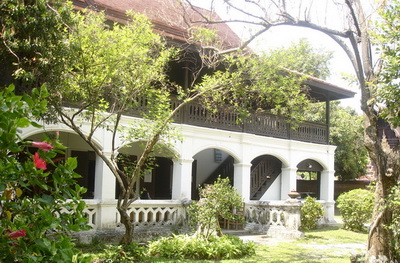

Lanna Architecture Center
Faculty of Architecture, Chiang Mai University
Tel: 0 5327 7855, 0 5394 2806-7 Fax: 0 5322 1448
Lanna Architecture Center
Faculty of Architecture, Chiang Mai University
Tel: 0 5327 7855, 0 5394 2806-7 Fax: 0 5322 1448
มหาวิทยาลัยเชียงใหม่ เริ่มดำเนินการมาตั้งแต่ เดือนมิถุนายน 2538 เป็นคณะที่ 17 ของมหาวิทยาลัยและเป็นคณะในกำกับของมหาวิทยาลัยเชียงใหม่ เมื่อวันที่ 3 มิถุนายน 2543 โดนมีบัณฑิตจบการศึกษารุ่นแรกในปีการศึกษา 2542 ตลอดระยะเวลาที่ผ่านมา ทางคณะฯ ได้ตระหนักถึงความสำคัญของการศึกษาทางด้านประวัติศาสตร์สถาปัตยกรรมล้านนา และการอนุรักษ์สถาปัตยกรรมมาโดยตลอด โดยมีหลักสูตรที่เกี่ยวเนื่องกับการศึกษาทางด้านประวัติศาสตร์สถาปัตยกรรม และการประยุกต์งานสถาปัตยกรรมล้านนา ซึ่งมีจุดประสงค์เพื่อให้นักศึกษาได้เข้าใจและมีพื้นฐานทางด้านสถาปัตยกรรม โดยสามารถนำความรู้ดังกล่าวไปปรับใช้กับการออกแบบสถาปัตยกรรมร่วมสมัยได้ อย่างเหมาะสม จากเหตุผลดังกล่าว คณะสถาปัตยกรรมศาสตร์ จึงได้มีโครงการจัดตั้งศูนย์สถาปัตยกรรมล้านนาขึ้น โดยมีวัตถุประสงค์เพื่อเป็นศูนย์กลางในการรวบรวม จัดเก็บจัดแสดงและศึกษาค้นคว้าข้อมูลด้านประวัติศาสตร์สถาปัตยกรรมล้านนา ตั้งแต่อดีตจนถึงปัจจุบัน เป็นศูนย์กลางสำหรับการเผยแพร่ความรู้แก่นักศึกษา นักวิจัย และผู้สนใจที่สำคัญแห่งหนึ่งของภูมิภาค
ปัจจุบันศูนย์สถาปัตยกรรมล้านนาเป็นหน่วยงานภายใต้งานศิลปวัฒนธรรมและชุมชน คณะสถาปัตยกรรม มหาวิทยาลัยเชียงใหม่ ทำหน้าที่ในการวิจัย จัดเก็บ และเผยแพร่ความรู้ทางด้านสถาปัตยกรรมล้านนา และศิลปวัฒนธรรมที่เกี่ยวเนื่อง มีที่ทำการ ณ อาคารคุ้มเจ้าบุรีรัตน์ (มหาอินทร์) ซึ่งเป็นอาคารเก่าอายุประมาณ 120 ปี ซึ่งคณะสถาปัตยกรรมศาสตร์ มหาวิทยาลัยเชียงใหม่ ได้รับบริจาคจากคุณเรียงพันธุ์ ทิพยมณฑล และอาจารย์จุลทัศน์ กิติบุตร เมื่อวันที่ 9 มีนาคม พ.ศ.2544
อาคารคุ้มเจ้าบุรีรัตน์ หรือบางท่านเรียกว่า คุ้มกลางเวียง เดิมเป็นของ เจ้าบุรีรัตน์ มหาอินทร์ หลานของเจ้าหลวงคำฝั้น (เจ้าหลวงเชียงใหม่ องค์ที่3) สันนิษฐานว่าน่าจะสร้างขึ้นระหว่างปี พ.ศ. 2432-2436 ต่อมาเจ้าน้อยชมชื่น ณ เชียงใหม่ บุตรชายเจ้าบุรีรัตน์ มหาอินทร์ ได้รับมรดกและเป็นผู้ครอบครองอาคารในระหว่างปี พ.ศ. 2437-2489
นางบัวผัน นิกรพันธ์ (ทิพยมณฑล) ได้ซื้อต่อจากเจ้าบุษบา ณ เชียงใหม่ (ภริยาเจ้าน้อยชมชื่น ณ เชียงใหม่) และเป็นมรดกตกทอดมาจนถึงญาติคนปัจจุบันคือคุณเรียงพันธุ์ ทิพยมณฑล (บุตรีนางบัวผันและเป็นน้าสาว ของอาจารย์จุลทัศน์ กิติบุตร) วันที่ 9 มีนาคม พ.ศ. 2544 ตระกูลกิติบุตรและทิพยมณฑล ได้มอบอาคารคุ้มเจ้าบุรีรัตน์ มหาอินทร์ ให้กับมหาวิทยาลัยเชียงใหม่ โดยมีวัตถุประสงค์เพื่อให้ใช้เป็นที่ทำการของศูนย์สถาปัตยกรรมล้านนา ภายใต้การดูแล และดำเนินงานของคณะสถาปัตยกรรมศาสตร์